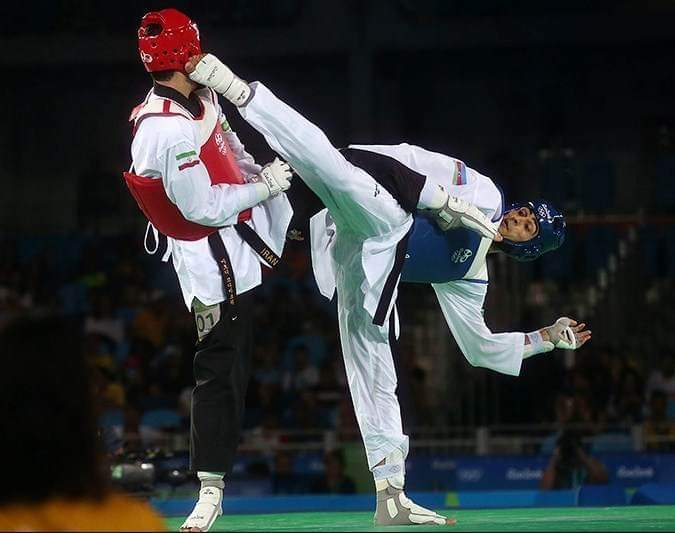

TRIBUTE OF TAEKWONDO(TKD)

•TAEKWONDO
Choi Hong Hi Founder of Taekwondo
Taekwondo is a Korean form of martial arts involving punching and kicking techniques, with emphasis on head-height kicks, spinning jump kicks, and fast kicking techniques. The literal translation for tae kwon do is "kicking", "punching", and "the art or way of". They are a kind of martial arts in which one attacks or defends with hands and feet anytime or anywhere, with occasional use of weapons. The physical training undertaken in Taekwondo is purposeful and fosters strength of mind through mental armament.
Taekwondo has four main styles that are also defined as separate organizations: Traditional style, World Taekwondo, ITF style, and ATA style.
Taekwon-Do was 'born' on April 11th, 1955 having been created by General (he was a Major General in the South Korean Army) Grandmaster Choi Hong Hi - 9th Degree Black Belt. Gen Choi was born on November 9th, 1918 in the rugged and harsh area of HwaDae, Myong Chun District in what is now D.P.R of Korea.
Choi Hong Hi, widely acknowledged as the founder of tae kwon do, a martial art that began in Korea and spread rapidly to community centers and storefronts around the United States, died on June 15 in Pyongyang, North Korea. He was 83 and lived in Mississauga, Ontario, a suburb of Toronto.